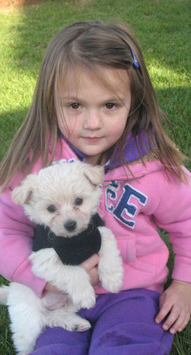
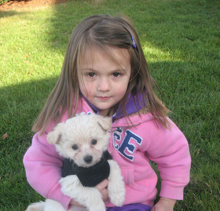

Our Mission
We here at Charlie's Chance Animal Rescue are dedicated to giving every animal a chance to find home. We are a non-profit, no-kill animal shelter, providing a home for our animals until they find a home with you.
Take a chance by giving an animal a chance at living and loving happily ever after.
| Animal Rescue Video |
|---|
| Animal Rescue News |
|---|
| The Humane Society: Animal Rescue News Team Read the top stories from the HSUS Animal Rescue Team, or watch animal rescue videos |
| The Animal Rescue Site | Stories Our most inspiring stories come from you, our clickers. We love hearing about your rescued, adopted, beloved pets. Please click the button below to share your story with the world! |
| The Huffington Post | Animal Shelter Outcomes Are Improving by Matt Bershadker - President & CEO, ASPCA |
| Animal Rescue Media |
|---|
Animal Rescue VideoClick for Animal Rescue NewsClick for Our Blog |
| I got adopted! - Ivy |
|---|
|  |
Our furry friend Ivy found her forever home with Amanda and her family. She is now enjoying life on their farm instead of on the streets of Camden. Click here to read more of their story on the Charlie's Chance blog! |
| I got adopted! - Ivy |
|---|
|  |
Our furry friend Ivy found her forever home with Amanda and her family. She is now enjoying life on their farm instead of on the streets of Camden. Click here to read more of their story on the Charlie's Chance blog! |